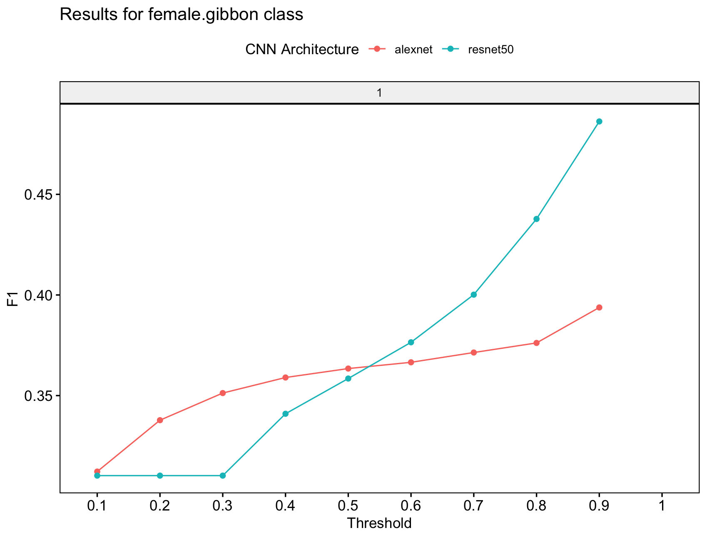

gibbonNetR
gibbonNetR.RmdData Preparation
We create spectrogram images of the sound files.
To follow best practices we want to use training and test data from different passive acoustic monitoring arrays These clips are from Danum Valley Conservation Area, Sabah, Malaysia, but are taken from two different arrays. The “spectrogram_images” function takes folders organized and labeled by signal type, and creates training, validation, or test folders using the “splits” specified in the function call. In the example below 70% of the data is used for training and 30% for validation.
# Link to training clips on Zenodo
ZenodoLink <- 'https://zenodo.org/records/14210125/files/trainingclips.zip?download=1'
# Download into specified zip file location
download.file(url = ZenodoLink, destfile = 'data/trainingclips.zip',method='curl')
# Unzip folder
exdir <- 'data/'
utils::unzip(zipfile = 'data/trainingclips.zip', exdir = exdir )
# Check folder composition
TrainingDatapath <- paste(exdir,"trainingclips",sep='')
# Check folder names
list.files(TrainingDatapath)
# Create spectrogram images
spectrogram_images(
trainingBasePath = TrainingDatapath,
outputBasePath = 'data/trainingimages/',
minfreq.khz = 0.4,
maxfreq.khz = 1.6,
random=FALSE,
splits = c(0.7, 0.3, 0), # Assign proportion to training, validation, or test folders
new.sampleratehz = 'NA'
)Download example test files on Zenodo and convert to spectrogram images
The “spectrogram_images” function below puts 100% of the test images into the test folder.
library(gibbonNetR)
# Link to training clips on Zenodo
ZenodoLink <- 'https://zenodo.org/records/14210125/files/testclips.zip?download=1'
# Download into specified zip file location
download.file(url = ZenodoLink, destfile = 'data/testclips.zip',method='curl')
# Unzip folder
exdir <- 'data/'
utils::unzip(zipfile = 'data/testclips.zip', exdir = exdir )
# Check folder composition
TestDatapath <- paste(exdir,"testclips",sep='')
# Check folder names
list.files(TestDatapath)
# Create spectorgram images
spectrogram_images(
trainingBasePath = TestDatapath,
outputBasePath = 'data/testimages/',
minfreq.khz = 0.4,
maxfreq.khz = 1.6,
splits = c(0, 0, 1), # Assign proportion to training, validation, or test folders
new.sampleratehz = 'NA'
)Model training
We start with a multi-class model. We will use the spectrogram images for training, test and validation that we created above. Note that for “input.data.path” the train and valid folders need to be there. For the test data, the path must contain the ‘test’ folder. You can specify multiple model architectures and number of epochs for training.
# Location of spectrogram images for training
input.data.path <- 'data/trainingimages/'
# Location of spectrogram images for testing
test.data.path <- 'data/testimages/test/'
# User specified training data label for metadata
trainingfolder.short <- 'danummulticlassexample'
# Specify the architecture type
architecture <- c('alexnet','resnet50') # Choose 'alexnet', 'vgg16', 'vgg19', 'resnet18', 'resnet50', or 'resnet152'
# We can specify the number of epochs to train here
epoch.iterations <- c(1)
# Function to train a multi-class CNN
gibbonNetR::train_CNN_multi(input.data.path=input.data.path,
architecture =architecture,
learning_rate = 0.001,
class_weights = c(0.3, 0.3, 0.2, 0.2, 0),
test.data=test.data.path,
unfreeze.param = TRUE,
epoch.iterations=epoch.iterations,
save.model= TRUE,
early.stop = "yes",
output.base.path = "data/model_output/",
trainingfolder=trainingfolder.short,
noise.category = "noise")Model evaluation
Specify for the ‘female.gibbon’ class
# Evaluate model performance
performancetables.dir <- "data/model_output/_danummulticlassexample_multi_unfrozen_TRUE_/performance_tables_multi"
PerformanceOutput <- gibbonNetR::get_best_performance(performancetables.dir=performancetables.dir,
class='female.gibbon',
model.type = "multi",Thresh.val=0)
# Evaluate model performance
performancetables.dir <- "/Users/denaclink/Desktop/RStudioProjects/gibbonNetR/data/model_output/_danummulticlassexample_multi_unfrozen_TRUE_/performance_tables_multi"
PerformanceOutput <- gibbonNetR::get_best_performance(performancetables.dir=performancetables.dir,
class='female.gibbon',
model.type = "multi",Thresh.val=0)